일본 브랜드 94
일본에서 시작한 브랜드 94개를 로고와 함께 모았습니다. 대표적인 일본 브랜드로는 닌텐도(Nintendo), 소니그룹(Sony Group), 혼다(Honda), 야마하 발동기(Yamaha Motor Company), 닛산 자동차(Nissan), 스튜디오 지브리(Studio Ghibli) 등이 있습니다. 수록 기준은 검수된 브랜드 설명이나 공식 웹사이트가 일치하는 위키데이터 개체에서 기원 국가가 확인된 경우로 한정했습니다.
다른 국가 보기
국가별 전체 →산업별로는 식음료 16개, 기술·전자 15개, 브랜드·비즈니스 15개, 모빌리티 12개 순입니다. 설립연도가 확인된 브랜드는 85개이며 가장 오래된 곳은 1804년, 가장 최근은 2013년에 시작했습니다. 시기별로는 1900년 이전 17개, 1900~1949년 28개, 1950~1999년 38개, 2000년 이후 2개입니다. 수록 자료로는 로고 이미지 91개, 로고 변천 자료 6개, 연혁 타임라인 19개를 갖췄습니다. 이 가운데 75개는 공식 웹사이트가 일치하는 위키데이터 개체로 연결해 두었습니다.
일본 브랜드 목록
 올림푸스Olympus일본 · 1919년
올림푸스Olympus일본 · 1919년올림푸스(Olympus)는 1919년 일본에서 광학기기 제조사로 출발해 현재 내시경 등 의료기기를 핵심으로 하는 정밀기술 기업이다.
 유니클로Uniqlo일본 · 1984년
유니클로Uniqlo일본 · 1984년유니클로는 패션을 유행의 장식이 아니라 생활을 구성하는 공산품처럼 다룬다.
 마쓰다Mazda일본 · 1931년
마쓰다Mazda일본 · 1931년마쓰다(Mazda Motor Corporation)는 1920년 일본 히로시마에서 마쓰다 주지로가 설립한 도요 코르크 공업(Toyo Cork…
 도요타Toyota일본 · 1937년
도요타Toyota일본 · 1937년도요타는 1937년 일본에서 설립된 자동차 제조사로, 코롤라·캠리·프리우스를 비롯한 광범위한 차종과 렉서스 럭셔리 브랜드를 운영하며 연간…
 일본항공Japan Airlines일본
일본항공Japan Airlines일본일본항공(Japan Airlines, JAL)은 일본의 대표 항공사다.
 아식스ASICS일본 · 1977년
아식스ASICS일본 · 1977년아식스(ASICS)는 오니츠카 타이거 등 세 회사의 대등한 합병으로 1977년 설립된 일본의 종합 스포츠용품 기업이다.
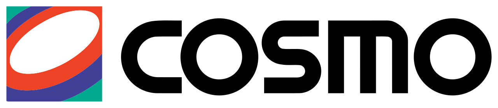
코스모석유Cosmo Oil일본코스모석유는 일본의 정유·석유 정제 및 주유소 운영 기업으로, 현재 지주회사 코스모에너지홀딩스 산하의 핵심 사업회사다.
 핸즈Hands일본 · 1976년
핸즈Hands일본 · 1976년핸즈(Hands, 구 도큐핸즈)는 DIY·취미·생활잡화를 취급하는 일본의 종합 잡화 소매 체인이다.
 기린Kirin일본
기린Kirin일본기린(麒麟, Kirin)은 일본의 대표 맥주·음료 기업으로, 창업기부터 동아시아 신화 속 상서로운 신수 '기린(麒麟)'을 브랜드 심볼로 삼아…
 도쿄전력TEPCO일본 · 1951년
도쿄전력TEPCO일본 · 1951년도쿄전력(TEPCO, Tokyo Electric Power Company)은 1951년 5월 1일 설립된 일본 최대 전력회사로, 그 뿌리는…
베네세Benesse일본 · 1955년베네세(Benesse)는 일본의 교육·출판 기업이다.
 아사히Asahi일본 · 1986년
아사히Asahi일본 · 1986년아사히(Asahi)는 일본의 대표적 맥주·음료 기업이다.
다이에이Daiei일본 · 1957년다이에이(Daiei)는 1957년 나카우치 이사오가 오사카에서 창업한 일본의 슈퍼마켓·종합 소매 체인으로, 1972년 미쓰코시 백화점을 제치고…
 시세이도SHISEIDO일본 · 1872년
시세이도SHISEIDO일본 · 1872년시세이도(Shiseido)는 1872년 창립된 일본의 종합 화장품 기업이다.
 젝셀Zexel일본
젝셀Zexel일본젝셀(Zexel)은 디젤 분사 장치 등을 만든 일본의 자동차 부품 기업이다.
 켄우드Kenwood일본 · 1946년
켄우드Kenwood일본 · 1946년켄우드(Kenwood)는 일본의 오디오·전자 기업이다.
요도바시 카메라Yodobashi Camera일본 · 1960년요도바시 카메라(Yodobashi Camera)는 가전·PC·카메라를 취급하는 일본의 대형 가전양판 소매 체인이다.
몽벨Montbell일본 · 1975년몽벨(Montbell)은 1975년 일본 오사카에서 설립된 아웃도어 의류·장비 브랜드이다.
 닌텐도Nintendo일본 · 1889년
닌텐도Nintendo일본 · 1889년닌텐도(Nintendo)는 교토시에 본사를 둔 일본의 다국적 비디오 게임 기업이다.
 카시오Casio일본 · 1957년
카시오Casio일본 · 1957년카시오(Casio)는 일본 도쿄도 시부야구에 본사를 둔 다국적 전자제품 제조 기업이다.
 닛카 위스키Nikka Whisky Distilling일본 · 1934년
닛카 위스키Nikka Whisky Distilling일본 · 1934년닛카 위스키(Nikka Whisky Distilling)는 도쿄에 본사를 둔 일본의 위스키 및 기타 음료 생산 기업이다.
 야마하Yamaha일본 · 1987년
야마하Yamaha일본 · 1987년야마하(Yamaha)는 악기, 오디오, 음향기기, 반도체 등을 만드는 일본의 음향 기업이다.
 무인양품Ryohin Keikaku일본 · 1980년
무인양품Ryohin Keikaku일본 · 1980년무인양품(無印良品, Ryohin Keikaku)은 1980년 설립된 일본의 라이프스타일 브랜드이다.
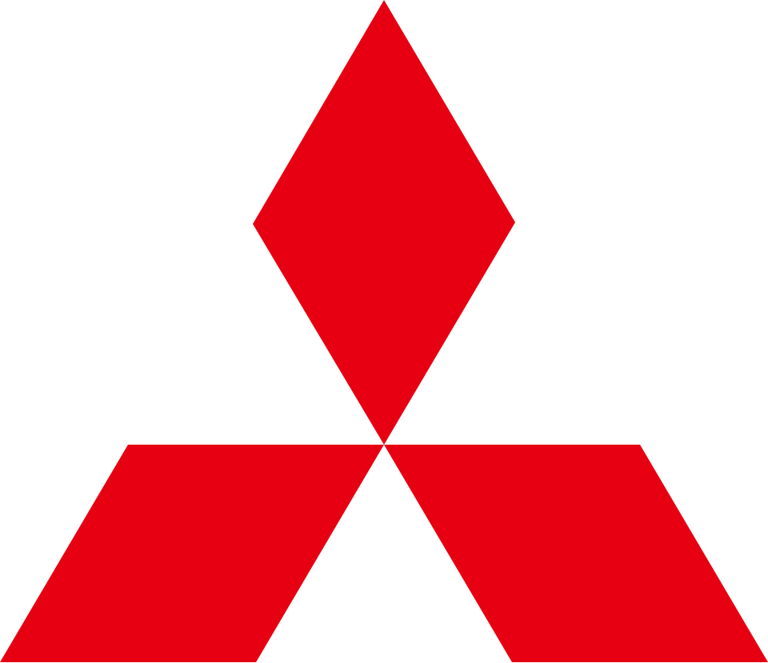
미쓰비시 그룹Mitsubishi일본 · 1870년미쓰비시 그룹(Mitsubishi)은 1870년에 창립된 일본의 복합기업이다.
 닛산 자동차Nissan일본 · 1933년
닛산 자동차Nissan일본 · 1933년닛산 자동차(Nissan)는 일본에 본부를 둔 자동차 회사이다.
 소니그룹Sony Group일본 · 1946년
소니그룹Sony Group일본 · 1946년소니그룹(Sony Group)은 일본의 다국적 복합기업이다.
 아사히 맥주Asahi Breweries일본 · 1889년
아사히 맥주Asahi Breweries일본 · 1889년아사히 맥주(Asahi Breweries)는 도쿄 스미다에 본사를 둔 일본의 음료 지주회사 Asahi Group Holdings의 맥주 사업…
 캡콤Capcom일본 · 1979년
캡콤Capcom일본 · 1979년캡콤(Capcom)은 일본 주오구에 본사를 둔 비디오 게임 회사이다.
 꼼데가르송Comme des Garçons일본 · 1969년
꼼데가르송Comme des Garçons일본 · 1969년꼼데가르송(Comme des Garçons)은 1969년 도쿄에서 여성의류로 시작해 1973년 일본에서 설립된 의류 업체이다.
 이스즈 자동차Isuzu일본 · 1934년
이스즈 자동차Isuzu일본 · 1934년이스즈 자동차(Isuzu)는 트럭과 버스를 주로 생산하는 일본의 자동차 제조 기업이다.
 스튜디오 지브리Studio Ghibli일본 · 1985년
스튜디오 지브리Studio Ghibli일본 · 1985년스튜디오 지브리(Studio Ghibli)는 장편 애니메이션 영화 제작을 주력으로 하며 영상 작품의 기획과 제작, 출판 및 음악 사업을…
 아큐라Acura일본 · 1986년
아큐라Acura일본 · 1986년아큐라(Acura)는 일본 자동차 제조사 혼다의 고급·고성능 부문으로, 주로 북미에 기반을 둔 브랜드이다.
 다이하쓰Daihatsu일본 · 1907년
다이하쓰Daihatsu일본 · 1907년다이하쓰(Daihatsu)는 일본 오사카부 이케다에 본사를 둔 자동차 제조사이다.
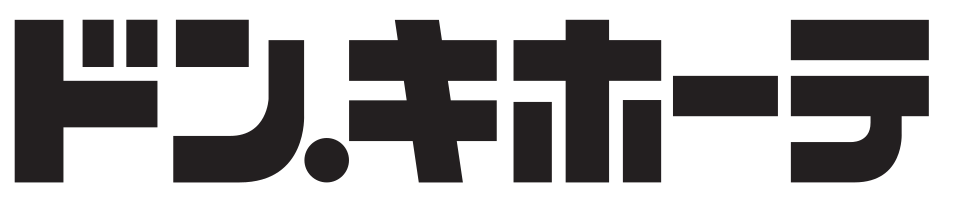
돈 키호테Don Quijote일본 · 1980년돈 키호테(Don Quijote)는 일본에서 종합 할인 매장을 전개하는 유통 기업이다.
 가와사키 중공업Kawasaki Heavy Industries일본 · 1878년
가와사키 중공업Kawasaki Heavy Industries일본 · 1878년가와사키 중공업(Kawasaki Heavy Industries)은 일본의 중공업 회사이다.
 고단샤Kodansha일본 · 1909년
고단샤Kodansha일본 · 1909년고단샤(Kodansha)는 1909년에 설립된 일본의 출판사이다.
 캐논Canon Inc.일본 · 1937년
캐논Canon Inc.일본 · 1937년캐논(Canon Inc.)은 영상 및 광학 기기에 특화된 일본의 다국적 기업이다.
 니콘Nikon일본 · 1917년
니콘Nikon일본 · 1917년니콘(Nikon)은 니콘 그룹에 속하며 광학과 영상에 특화된 일본 기업이다.
 닷선Datsun일본 · 1931년
닷선Datsun일본 · 1931년닷선(Datsun)은 일본 닛산 자동차 산하의 자동차 브랜드이다.
 산토리Suntory일본 · 1899년
산토리Suntory일본 · 1899년산토리(Suntory)는 양주, 맥주, 청량 음료를 제조·판매하는 일본 굴지의 기업이다.
 % 아라비카%Arabica일본 · 2013년
% 아라비카%Arabica일본 · 2013년% 아라비카(%Arabica)는 일본 교토부 교토시에 본사를 둔 국제적인 스페셜티 커피 체인 브랜드이다.
 스바루Subaru일본 · 1953년
스바루Subaru일본 · 1953년스바루(Subaru)는 일본 후지중공업의 자동차 제조 부문이자 그 브랜드명이다.
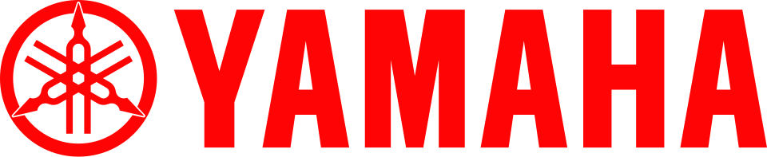
야마하 발동기Yamaha Motor Company일본 · 1955년야마하 발동기(Yamaha Motor Company)는 일본 시즈오카현 이와타시에 본사를 둔 다국적 수송용 기기 제조사이다.
 혼다Honda일본 · 1948년
혼다Honda일본 · 1948년혼다 기연공업 주식회사(Honda Motor Company)는 일본의 자동차와 모터사이클 제작 회사이다.
히타치 제작소Hitachi일본 · 1910년히타치 제작소(Hitachi)는 일본 마루노우치에 본사를 둔 대기업이다.
 샤프Sharp Corporation일본 · 1912년
샤프Sharp Corporation일본 · 1912년샤프(Sharp Corporation)는 1912년 창업한 일본의 전자기업으로, 액정 디스플레이와 가전제품, 휴대전화, 복합기 등 다양한 전자…
 코나미Konami일본 · 1969년
코나미Konami일본 · 1969년코나미(Konami)는 일본의 다국적 엔터테인먼트 기업이자 비디오 게임 개발사·배급사이다.
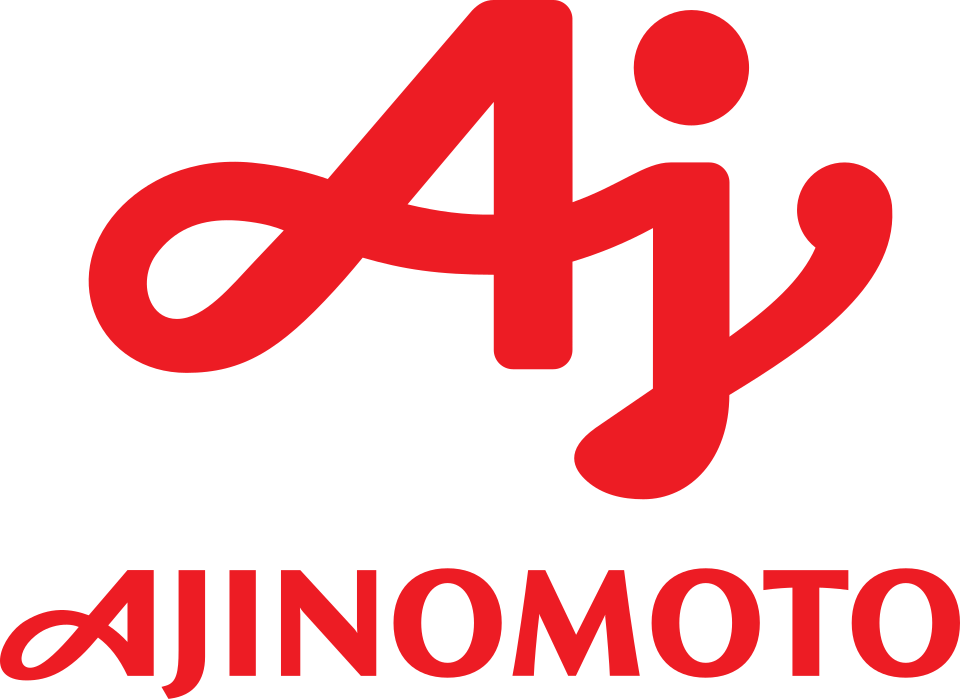
아지노모도Ajinomoto일본 · 1925년아지노모도(Ajinomoto)는 1925년에 설립된 일본의 식품 기업이다.
전체 목록
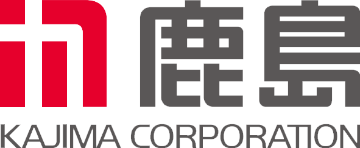
가지마 건설 Kajima Corporation가지마 건설(Kajima Corporation)은 일본 아카사카에 본사를 둔 주요 종합 건설회사로, 고층 빌딩 사업과 대규모 개발 프로젝트를 수행한다.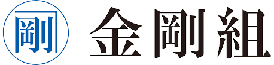
곤고구미 Kongō Gumi곤고구미(Kongō Gumi)는 사찰·신사·불각의 설계와 시공, 성곽과 문화재 건축물의 복원·수리를 주업으로 하는 일본 건설회사이다.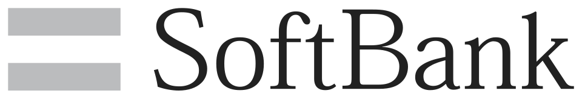
소프트뱅크 그룹 SoftBank Group소프트뱅크 그룹(SoftBank Group)은 일본 최대 IT기업이자 세계적인 투자회사이다.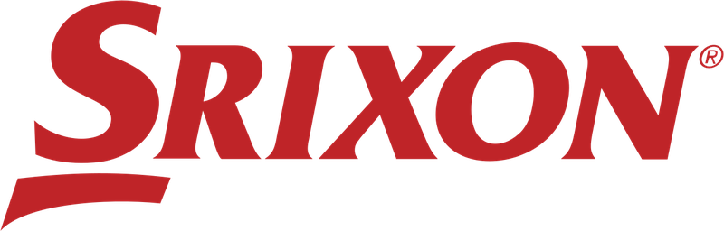
스릭슨 Srixon스릭슨(Srixon)은 일본의 스미토모 고무공업이 소유한 골프·테니스 용품 전문 브랜드이다.스퀘어 에닉스 Square Enix스퀘어 에닉스(Square Enix)는 일본의 비디오 게임 개발·배급사로, 게임과 출판·머천다이징·오락 사업을 전개하는 스퀘어 에닉스 홀딩스의 자회사이다.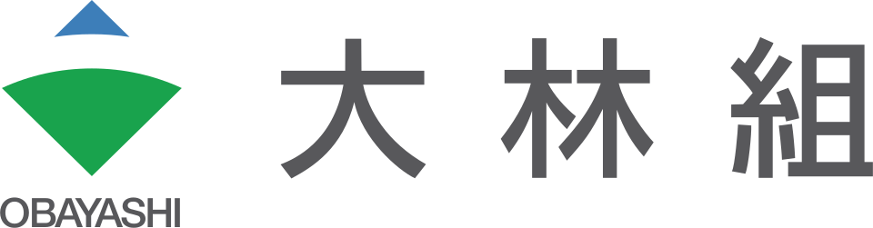
오바야시구미 Obayashi Corporation오바야시구미(Obayashi Corporation)는 1892년에 설립된 일본의 종합 건설회사로, 대형 건축물과 교통 기반시설을 시공한다.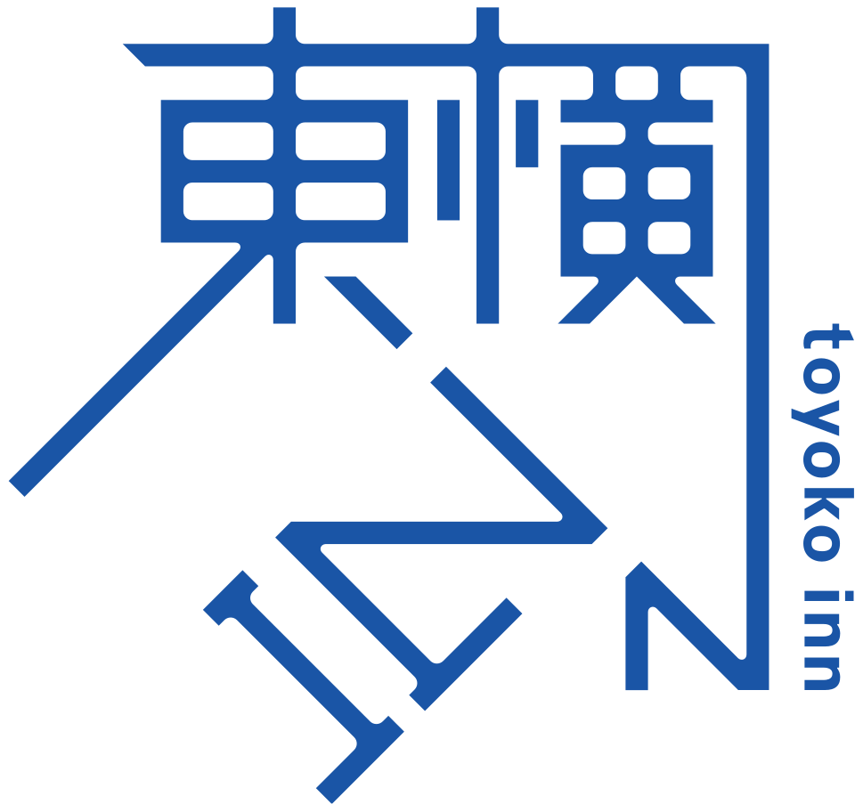
토요코인 Toyoko Inn토요코인(Toyoko Inn)은 1986년에 설립된 일본의 비즈니스 호텔 체인이다.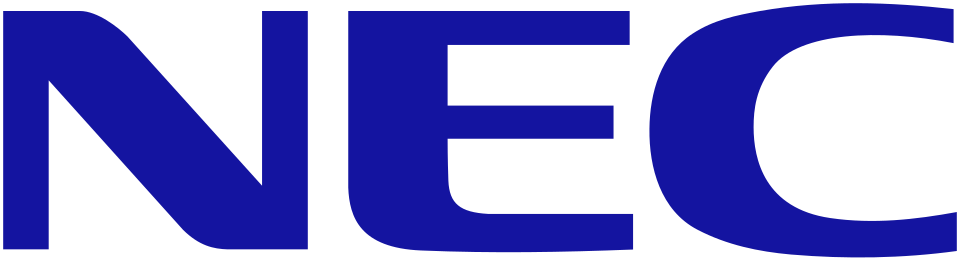
NECNEC(NEC Corporation)는 일본 도쿄도 미나토구 시바에 본사가 있는 스미토모 그룹 계열의 정보통신기술 및 전자기업이다.